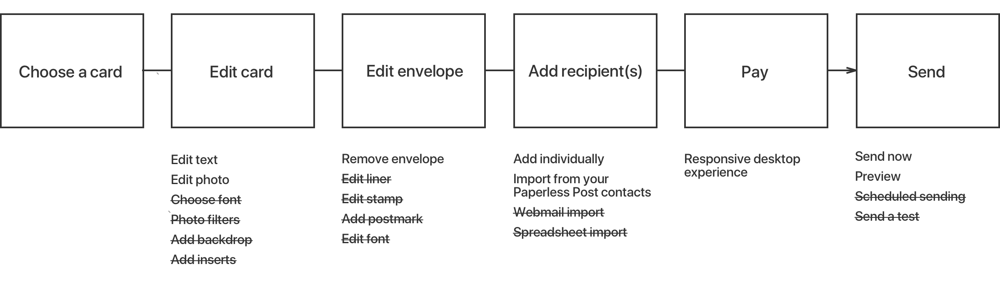

Challenge
Challenging stuff
A simplified create experience
More text
Mobile web browse flow
Because we didn't have a create tool for Android users (or iOS users).

Mobile web onboarding flow: Awesome description.
In phase 1, we focused on new user education and browsing. In phase 2 of our revamping, we focused on creating a new mobile web card editing tool to capitalize on last-minute holiday sending.
Challenging stuff
More text
Because we didn't have a create tool for Android users (or iOS users).